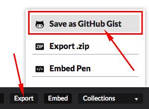
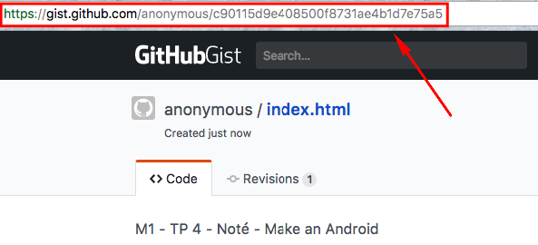

Durée: 2h
Cours et TP corrigés autorisés :
https://davidbabel.github.io/
Internet autorisé, documentation etc.
Réseaux sociaux et chats
interdits
Le lien du
GIST du TP terminé doit être envoyé par mail à
david_20e0@sendtodropbox.com
Vous pouvez créer un GIST comme suit :


N'hésitez pas à poser des questions, je ne vous donnerez pas la réponse mais je vous direz vos erreurs.
Il est fortement recommandé de lire cet énnoncé et les astuces intégralement avant de vous lancer
- Le code HTML ne doit pas être modifié, uniquement décommenté au fur à mesure de votre avancement.
- Votre code CSS doit être le plus optimisé et factorisé possible (comprendre qu'il faut écrire le moins possible de
fois la même chose), regrouppez donc les valeurs communes dans une seule et meme règle.
- Vous ne devez utiliser que les selecteurs vus en cours
Attention : Si vous faites une erreur dans votre CSS, toute la suite du code ne seras pas interprétée
1 - Reproduire l'android tel qu'apparait le modèle quand vous survolez le bouton "Tester son Android", le votre doit être
vert:
#A5CA39.
Inspirez vous de ce modèle pour la taille des éléments et des arrondis. Toutes les valeurs sont des multiples de 5 ou
de 10 (sauf les oreilles) et son exprimés en pixels.
Il est recommandé de construire d'abord la tête, puis le corps, et de placer le corps correctement (voir astuces 2 et
3).
Vous pourrez ensuite placer un à un les éléments restants plus facilement.
astuce 1: utiliser la propriété CSS 'border: 1px solid red;' pour visualiser plus facilement la forme d'un objet
pendant sa construction (et enlevez la ensuite).
Astuce 2: La tête est un cercle entier, le corps remonte dans la tête en utilisant une valeur négative de margin,
masquant ainsi une partie de la tête.
astuce 3: Vous pouvez utiliser une bordure blanche de 10px pour le corps afin de marquer la séparation avec la
tête.
astuce 4: Mis à part la tête et le corps, le reste des éléments est positionné en position absolue.
astuce 5: Les oreilles ont une inclinaison de 25 degrès.
astuce 6: Utiliser les boutons "Tester son android" et "Voir les notes" pour afficher des aides visuelles. Vous
pouvez également décommenter la première règle CSS pour afficher l'android de test en permanence.
2 - Changer la couleur de l'android pour que lors de son survol la totalité de son corps devienne plus foncé avec ce vert: #96bb2a (attention aux règles de priorités).
3 - Lors du survol de la tête, l'android pivote cette ci de 10 degrès sur la droite.
4 - Lors du clic sur le corps de l'android, celui ci écarte les DEUX bras de 25 degrès.
astuce 7: Pour le mouvement des bras, renseignez vous sur les valeurs textes de la propriété CSS "transform origin".
Le codepen du TP est disponible à cette adresse : https://codepen.io/davidbabel/pen/ooqMPM
Bon courage